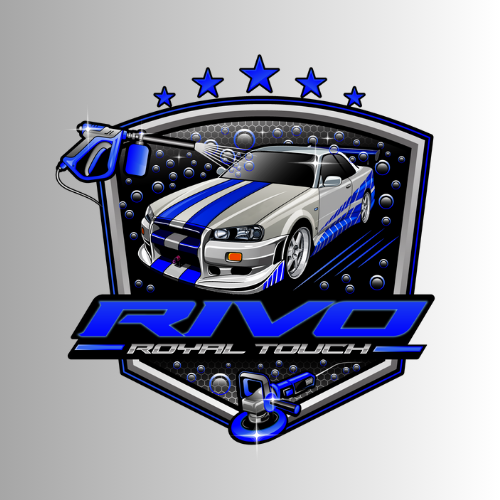

These are four of my projects I have completed in the past.
Woodworking ProjectA portable wooden table I built in woodworking class featuring two sturdy legs connected horizontally at the top and bottom. The design allows it to be folded and stored away easily, with the tabletop neatly wrapped for a clean finish.Car Detailing Logo

This is my logo for my car detailing busienss, I desinged it from scratch using adobe illustrator. I based the colour theme of the Nissan Skyline R34, while also ensuring to use bright colours to grab people attention. It took my around 3-4 designs to finally end up with the final product.Phone Project I repaired a fully destroyed iPhone 7 that had extensive hardware damage. I replaced the cracked screen, swapped out damaged internal parts, and carefully reassembled the device. Through the repair process, I was able to restore the phone to full working condition, showcasing problem solving and technical repair skillsEssay I completed an English project that went beyond just writing an essay. Along with the written analysis, I created a presentation, delivered a speech, and produced a video analysis to support my ideas. The project combined research, critical thinking, and communication skills into a full, multi part assignment.